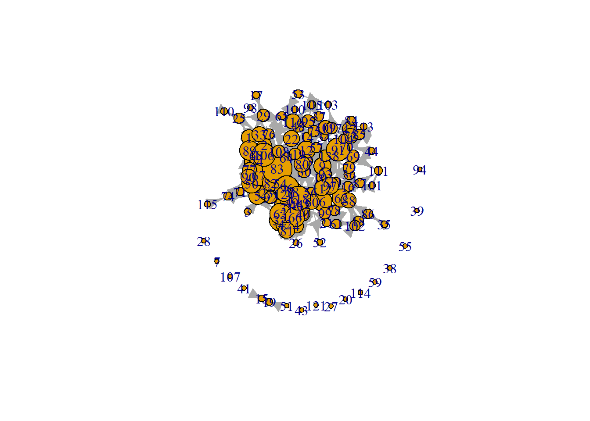

Week4
Susanna
2026-09-21
0.0.1 Playing with Plots
require(igraph)
g <- make_graph("Zachary")
plot(g)
Apparently, there’s a random component to how graphs are made: placement of nodes based on popularity.
gmat <- as_adjacency_matrix(g, type = "both", sparse = FALSE)
gmat## [,1] [,2] [,3] [,4] [,5] [,6] [,7] [,8] [,9] [,10] [,11] [,12] [,13] [,14] [,15] [,16] [,17]
## [1,] 0 1 1 1 1 1 1 1 1 0 1 1 1 1 0 0 0
## [2,] 1 0 1 1 0 0 0 1 0 0 0 0 0 1 0 0 0
## [3,] 1 1 0 1 0 0 0 1 1 1 0 0 0 1 0 0 0
## [4,] 1 1 1 0 0 0 0 1 0 0 0 0 1 1 0 0 0
## [5,] 1 0 0 0 0 0 1 0 0 0 1 0 0 0 0 0 0
## [6,] 1 0 0 0 0 0 1 0 0 0 1 0 0 0 0 0 1
## [7,] 1 0 0 0 1 1 0 0 0 0 0 0 0 0 0 0 1
## [8,] 1 1 1 1 0 0 0 0 0 0 0 0 0 0 0 0 0
## [9,] 1 0 1 0 0 0 0 0 0 0 0 0 0 0 0 0 0
## [10,] 0 0 1 0 0 0 0 0 0 0 0 0 0 0 0 0 0
## [11,] 1 0 0 0 1 1 0 0 0 0 0 0 0 0 0 0 0
## [12,] 1 0 0 0 0 0 0 0 0 0 0 0 0 0 0 0 0
## [13,] 1 0 0 1 0 0 0 0 0 0 0 0 0 0 0 0 0
## [14,] 1 1 1 1 0 0 0 0 0 0 0 0 0 0 0 0 0
## [15,] 0 0 0 0 0 0 0 0 0 0 0 0 0 0 0 0 0
## [16,] 0 0 0 0 0 0 0 0 0 0 0 0 0 0 0 0 0
## [17,] 0 0 0 0 0 1 1 0 0 0 0 0 0 0 0 0 0
## [18,] 1 1 0 0 0 0 0 0 0 0 0 0 0 0 0 0 0
## [19,] 0 0 0 0 0 0 0 0 0 0 0 0 0 0 0 0 0
## [20,] 1 1 0 0 0 0 0 0 0 0 0 0 0 0 0 0 0
## [21,] 0 0 0 0 0 0 0 0 0 0 0 0 0 0 0 0 0
## [22,] 1 1 0 0 0 0 0 0 0 0 0 0 0 0 0 0 0
## [23,] 0 0 0 0 0 0 0 0 0 0 0 0 0 0 0 0 0
## [24,] 0 0 0 0 0 0 0 0 0 0 0 0 0 0 0 0 0
## [25,] 0 0 0 0 0 0 0 0 0 0 0 0 0 0 0 0 0
## [26,] 0 0 0 0 0 0 0 0 0 0 0 0 0 0 0 0 0
## [27,] 0 0 0 0 0 0 0 0 0 0 0 0 0 0 0 0 0
## [28,] 0 0 1 0 0 0 0 0 0 0 0 0 0 0 0 0 0
## [29,] 0 0 1 0 0 0 0 0 0 0 0 0 0 0 0 0 0
## [30,] 0 0 0 0 0 0 0 0 0 0 0 0 0 0 0 0 0
## [31,] 0 1 0 0 0 0 0 0 1 0 0 0 0 0 0 0 0
## [32,] 1 0 0 0 0 0 0 0 0 0 0 0 0 0 0 0 0
## [33,] 0 0 1 0 0 0 0 0 1 0 0 0 0 0 1 1 0
## [34,] 0 0 0 0 0 0 0 0 1 1 0 0 0 1 1 1 0
## [,18] [,19] [,20] [,21] [,22] [,23] [,24] [,25] [,26] [,27] [,28] [,29] [,30] [,31] [,32]
## [1,] 1 0 1 0 1 0 0 0 0 0 0 0 0 0 1
## [2,] 1 0 1 0 1 0 0 0 0 0 0 0 0 1 0
## [3,] 0 0 0 0 0 0 0 0 0 0 1 1 0 0 0
## [4,] 0 0 0 0 0 0 0 0 0 0 0 0 0 0 0
## [5,] 0 0 0 0 0 0 0 0 0 0 0 0 0 0 0
## [6,] 0 0 0 0 0 0 0 0 0 0 0 0 0 0 0
## [7,] 0 0 0 0 0 0 0 0 0 0 0 0 0 0 0
## [8,] 0 0 0 0 0 0 0 0 0 0 0 0 0 0 0
## [9,] 0 0 0 0 0 0 0 0 0 0 0 0 0 1 0
## [10,] 0 0 0 0 0 0 0 0 0 0 0 0 0 0 0
## [11,] 0 0 0 0 0 0 0 0 0 0 0 0 0 0 0
## [12,] 0 0 0 0 0 0 0 0 0 0 0 0 0 0 0
## [13,] 0 0 0 0 0 0 0 0 0 0 0 0 0 0 0
## [14,] 0 0 0 0 0 0 0 0 0 0 0 0 0 0 0
## [15,] 0 0 0 0 0 0 0 0 0 0 0 0 0 0 0
## [16,] 0 0 0 0 0 0 0 0 0 0 0 0 0 0 0
## [17,] 0 0 0 0 0 0 0 0 0 0 0 0 0 0 0
## [18,] 0 0 0 0 0 0 0 0 0 0 0 0 0 0 0
## [19,] 0 0 0 0 0 0 0 0 0 0 0 0 0 0 0
## [20,] 0 0 0 0 0 0 0 0 0 0 0 0 0 0 0
## [21,] 0 0 0 0 0 0 0 0 0 0 0 0 0 0 0
## [22,] 0 0 0 0 0 0 0 0 0 0 0 0 0 0 0
## [23,] 0 0 0 0 0 0 0 0 0 0 0 0 0 0 0
## [24,] 0 0 0 0 0 0 0 0 1 0 1 0 1 0 0
## [25,] 0 0 0 0 0 0 0 0 1 0 1 0 0 0 1
## [26,] 0 0 0 0 0 0 1 1 0 0 0 0 0 0 1
## [27,] 0 0 0 0 0 0 0 0 0 0 0 0 1 0 0
## [28,] 0 0 0 0 0 0 1 1 0 0 0 0 0 0 0
## [29,] 0 0 0 0 0 0 0 0 0 0 0 0 0 0 1
## [30,] 0 0 0 0 0 0 1 0 0 1 0 0 0 0 0
## [31,] 0 0 0 0 0 0 0 0 0 0 0 0 0 0 0
## [32,] 0 0 0 0 0 0 0 1 1 0 0 1 0 0 0
## [33,] 0 1 0 1 0 1 1 0 0 0 0 0 1 1 1
## [34,] 0 1 1 1 0 1 1 0 0 1 1 1 1 1 1
## [,33] [,34]
## [1,] 0 0
## [2,] 0 0
## [3,] 1 0
## [4,] 0 0
## [5,] 0 0
## [6,] 0 0
## [7,] 0 0
## [8,] 0 0
## [9,] 1 1
## [10,] 0 1
## [11,] 0 0
## [12,] 0 0
## [13,] 0 0
## [14,] 0 1
## [15,] 1 1
## [16,] 1 1
## [17,] 0 0
## [18,] 0 0
## [19,] 1 1
## [20,] 0 1
## [21,] 1 1
## [22,] 0 0
## [23,] 1 1
## [24,] 1 1
## [25,] 0 0
## [26,] 0 0
## [27,] 0 1
## [28,] 0 1
## [29,] 0 1
## [30,] 1 1
## [31,] 1 1
## [32,] 1 1
## [33,] 0 1
## [34,] 1 0g is in igraph format, we just turned it back into a matrix
isSymmetric(gmat)## [1] TRUEIf symmetric, network is undirected
# be aware that directed graphs are considered as undirected. but g is undirected.
igraph::transitivity(g, type = c("localundirected"), isolates = c("NaN", "zero"))## [1] 0.1500000 0.3333333 0.2444444 0.6666667 0.6666667 0.5000000 0.5000000 1.0000000 0.5000000
## [10] 0.0000000 0.6666667 NaN 1.0000000 0.6000000 1.0000000 1.0000000 1.0000000 1.0000000
## [19] 1.0000000 0.3333333 1.0000000 1.0000000 1.0000000 0.4000000 0.3333333 0.3333333 1.0000000
## [28] 0.1666667 0.3333333 0.6666667 0.5000000 0.2000000 0.1969697 0.1102941We’re counting triangles now. No person is standing out.
igraph::betweenness(g, directed = FALSE)## [1] 231.0714286 28.4785714 75.8507937 6.2880952 0.3333333 15.8333333 15.8333333 0.0000000
## [9] 29.5293651 0.4476190 0.3333333 0.0000000 0.0000000 24.2158730 0.0000000 0.0000000
## [17] 0.0000000 0.0000000 0.0000000 17.1468254 0.0000000 0.0000000 0.0000000 9.3000000
## [25] 1.1666667 2.0277778 0.0000000 11.7920635 0.9476190 1.5428571 7.6095238 73.0095238
## [33] 76.6904762 160.55158731 and 34 have a VERY high betweenness score. Not very visible in initial graph, so if we want to focus on this finding, we want a graph where 1 and 34 do not overlap so much with other nodes. 3 is also interesting: bridge beween bridge?
How can we emphasise this in visualisation?
hue palet, vibrancy based on betweenness (standardised) size based on betweenness or change layout
igraph::dyad_census(g)## Warning: `dyad_census()` requires a directed graph.## $mut
## [1] 78
##
## $asym
## [1] 0
##
## $null
## [1] 483igraph::triad_census(g)## Warning in triad_census_impl(graph = graph): Triad census called on an undirected graph. All connections will be treated as mutual.
## Source: misc/motifs.c:1157## [1] 3971 0 1575 0 0 0 0 0 0 0 393 0 0 0 0 45# I will use sna because it shows the names of the triads as well.
sna::triad.census(gmat)## 003 012 102 021D 021U 021C 111D 111U 030T 030C 201 120D 120U 120C 210 300
## [1,] 3971 0 1575 0 0 0 0 0 0 0 393 0 0 0 0 45unloadNamespace("sna") #I will detach this package again, otherwise it will interfere with all kind of functions from igraph, and my students will hate me for that.Transitivity: how many triads are closed divided by the total amount of triads that are or could have been closed. 300 is fully closed: - last digit: number of dyads without ties - second digit: number of dyads with one tie - first digit: number of dyads with two ties (mutual dyads) - specific subtype: C: cyclic D: downward U: upward T: transitive
Uitgaand van actorperspectief wordt één triade 3 keer geteld (één keer vanuit elke betrokken actor).
Manually calculating global transitivity:
igraph::transitivity(g, type = "global")## [1] 0.2556818sna::gtrans(gmat)## [1] 0.2556818triad_g <- data.frame(sna::triad.census(gmat))
transitivity_g <- (3 * triad_g$X300)/(triad_g$X201 + 3 * triad_g$X300)
transitivity_g## [1] 0.2556818(local transitivity would be transitivity in network of ego)
1 and 34 are not connected, both have high betweenness, but low local transitivity - let’s visualise that story:
# changing V
V(g)$size = betweenness(g, normalized = T, directed = FALSE) * 60 + 10 #after some trial and error
plot(g, mode = "undirected")
V is about vertices, e is about edges
To make it look nice in article, define size of plot window beforehand for alllll images!
set.seed(2345)
l <- layout_with_mds(g) #https://igraph.org/r/doc/layout_with_mds.html
plot(g, layout = l)
l #let us take a look at the coordinates## [,1] [,2]
## [1,] 1.070931935 -0.172458113
## [2,] 0.732844464 0.754023309
## [3,] 0.100582299 0.397693607
## [4,] 0.708246655 0.570205545
## [5,] 1.816293170 -0.120778206
## [6,] 1.881329566 -0.135518854
## [7,] 1.881329566 -0.135518854
## [8,] 0.812606714 0.472619437
## [9,] -0.003769996 0.615513628
## [10,] -0.685680315 0.621065149
## [11,] 1.816293170 -0.120778206
## [12,] 1.621247830 -0.065820692
## [13,] 1.637845123 0.001789972
## [14,] 0.067317230 0.681421148
## [15,] -1.796316404 0.351417630
## [16,] -1.796316404 0.351417630
## [17,] 2.775260452 -0.124317652
## [18,] 1.616210024 0.182510197
## [19,] -1.796316404 0.351417630
## [20,] 0.048362858 0.566654982
## [21,] -1.796316404 0.351417630
## [22,] 1.616210024 0.182510197
## [23,] -1.796316404 0.351417630
## [24,] -1.891240567 -0.799574907
## [25,] -0.258345165 -2.006346563
## [26,] -0.360530857 -2.131642875
## [27,] -1.865177401 0.128596564
## [28,] -0.760226022 -0.529392331
## [29,] -0.710979936 -0.299960128
## [30,] -1.898426916 -0.149398746
## [31,] -0.568691923 0.804189411
## [32,] -0.048136037 -0.870967614
## [33,] -1.023681000 -0.035802363
## [34,] -1.146442924 -0.037605192l[1, 1] <- 4
l[34, 1] <- -3.5
plot(g, layout = l) Second image suggests conflict, group being pulled apart by 34 and 1. In
article: explain that 1 and 34 were manually placed at opposite sides of
the network to illustrate the described process.
Second image suggests conflict, group being pulled apart by 34 and 1. In
article: explain that 1 and 34 were manually placed at opposite sides of
the network to illustrate the described process.
1 Plotting On Ashwin’s data
load("./data/IndividualCharacteristics.RData")
load("./data/NetworkCharacteristics.RData")# view(studying[[1]])
studying_df_t1 <- as.data.frame(studying[[1]][1])
class(studying_df_t1)## [1] "data.frame"# view(weak_netw_t1)
studying_df_t2 <- as.data.frame(studying[[1]][2])
class(studying_df_t2)## [1] "data.frame"# view(studying_df_t2)
weak_netw_t2 <- data.matrix(studying_df_t2)
weak_netw_t2[weak_netw_t2==9]<-NA
class(weak_netw_t2)## [1] "matrix" "array"# view(hanging[[1]])
hanging_df_t1 <- as.data.frame(hanging[[1]][1])
class(hanging_df_t1)## [1] "data.frame"# view(hanging_df_t1)
strong_netw_t1 <- data.matrix(hanging_df_t1)
strong_netw_t1[strong_netw_t1==9]<-NA
class(strong_netw_t1)## [1] "matrix" "array"# view(strong_netw_t1)
hanging_df_t2 <- as.data.frame(hanging[[1]][2])
class(hanging_df_t2)## [1] "data.frame"# view(hanging_df_t2)
strong_netw_t2 <- data.matrix(hanging_df_t2)
strong_netw_t2[strong_netw_t2==9]<-NA
class(strong_netw_t2)## [1] "matrix" "array"Making own matrix
testm <- matrix(NA, nrow = 4, ncol = 4)
testm[1,1] <- 0
testm[1,2] <- 0
testm[1,3] <- NA
testm[3,1] <- 1
testm[3,2] <- 1
testm[4,2] <- 0
testm[4,2] <- 1
testm## [,1] [,2] [,3] [,4]
## [1,] 0 0 NA NA
## [2,] NA NA NA NA
## [3,] 1 1 NA NA
## [4,] NA 1 NA NAmrow <- rowSums(is.na(testm)) == nrow(testm)
mcol <- colSums(is.na(testm)) == ncol(testm)
mtot <- which(mrow & mcol)
mtot## integer(0)testm[which(mrow), ] <- 0
testm## [,1] [,2] [,3] [,4]
## [1,] 0 0 NA NA
## [2,] 0 0 0 0
## [3,] 1 1 NA NA
## [4,] NA 1 NA NArequire(igraph)
uni1nona <- strong_netw_t1
uni1nona[is.na(uni1nona)] <- 0
uni1 <- igraph::graph_from_adjacency_matrix(uni1nona, mode = "directed", weighted = NULL, diag = TRUE, add.colnames = NA,
add.rownames = NA)
plot(uni1) Yay I have a graph!!!
Yay I have a graph!!!
V(uni1)$size = igraph::degree(uni1) * 1.05 + 5
plot(uni1)
plot(uni1,
edge.arrow.size = 0.1,
vertex.label.cex = 0.4,
vertex.size = 10)
V(uni1)$size = igraph::degree(uni1)*0.5 + 5
plot(uni1,
edge.arrow.size = 0.1,
vertex.label.cex = 0.4)
w1international <- international[[1]]
w1international <- w1international[, "W1INTERNATIONAL"]
w1international## 30001 30002 30003 30004 30005 30006 30007 30008 30009 30010 30011 30012 30013 30014 30015 30016
## 2 2 2 2 2 2 NA 2 2 2 2 2 2 1 2 2
## 30017 30018 30019 30020 30021 30022 30023 30025 30026 30027 30028 30029 30030 30031 30032 30033
## 2 2 2 2 2 2 2 2 1 2 2 2 2 2 2 2
## 30034 30035 30036 30037 30038 30039 30040 30041 30042 30043 30044 30045 30046 30047 30048 30049
## NA 2 2 2 2 NA NA 2 NA 2 2 2 2 2 2 2
## 30050 30051 30052 30053 30054 30055 30056 30057 30058 30059 30060 30061 30062 30063 30064 30065
## 2 2 NA 2 2 2 NA 2 2 2 NA 2 2 2 2 2
## 30066 30067 30068 30069 30070 30071 30072 30073 30074 30075 30076 30077 30078 30079 30080 30081
## 2 2 2 2 2 2 2 2 2 2 2 2 2 2 NA 2
## 30082 30083 30084 30085 30086 30087 30088 30089 30090 30091 30092 30093 30094 30095 30096 30097
## 2 2 2 2 2 2 2 2 2 2 2 NA 2 NA 2 2
## 30098 30099 30100 30101 30102 30103 30104 30105 30106 30107 30108 30109 30110 30111 30112 30113
## 2 2 2 2 2 2 2 2 2 2 NA 2 2 2 2 2
## 30114 30115 30116 30117 30118 30119 30120 30121 30122
## 2 NA 2 2 2 2 2 2 1print(uni1)## IGRAPH 677996b D--- 121 395 --
## + attr: size (v/n)
## + edges from 677996b:
## [1] 1-> 2 1-> 24 1-> 33 1-> 68 1-> 89 1->106 2-> 89 2->106 3-> 23 4-> 81 5-> 32 5-> 50
## [13] 5-> 58 5-> 63 5-> 67 5-> 77 5-> 90 5-> 92 6-> 11 6-> 45 6-> 49 6-> 62 6-> 78 6-> 99
## [25] 6->118 8-> 91 9-> 13 9-> 14 9-> 36 9-> 57 9-> 80 9-> 83 9-> 88 12-> 2 12-> 11 12-> 22
## [37] 12-> 37 12-> 57 12-> 60 12-> 75 12->106 12->109 13-> 9 13-> 12 13-> 57 13-> 79 15-> 19 16-> 79
## [49] 16-> 88 16-> 93 16-> 97 17-> 29 18-> 88 18->102 19-> 15 21-> 4 21-> 88 21->112 22-> 48 22-> 76
## [61] 22->116 23-> 3 23-> 54 23-> 83 23-> 96 23->120 24-> 2 24-> 33 24-> 50 24-> 67 24-> 77 24-> 83
## [73] 24-> 89 24->106 25-> 1 25-> 33 25->110 29-> 1 29-> 17 29-> 22 29-> 25 29-> 33 29->116 30-> 8
## [85] 30-> 22 30-> 56 30-> 58 31-> 4 31-> 32 31-> 40 31-> 42 31-> 46 31-> 63 31-> 66 31-> 67 31->118
## + ... omitted several edges#edges <- igraph::as_data_frame(uni1, what = "edges")
#edges
#uni2 <- graph_from_data_frame(edges, directed = TRUE, vertices = studentids)
#vertex_attr_names(uni1)
#V(uni1)$international <- w1international
#V(uni1)$color <- ifelse(V(uni1)$w1international == 1, "blue", "orange")
length(w1international)## [1] 121length(V(uni1))## [1] 121I think I lost the connection to the original IDs. Let’s try again
class(hanging_df_t2)## [1] "data.frame"hangingt2nona <- hanging_df_t2
hangingt2nona[hangingt2nona==9]<- 0
hangingt2nona <- as.matrix(hangingt2nona)
hangingt2 <- graph_from_adjacency_matrix(hangingt2nona)
plot(hangingt2)
V(hangingt2)$size = igraph::degree(hangingt2)*0.5 + 5
plot(hangingt2,
edge.arrow.size = 0.1,
vertex.label.cex = 0.4)
#check nina's lab journal2 Webscraping tutorial
#install.packages("xml2")
require(xml2)## Loading required package: xml2## Warning: package 'xml2' was built under R version 4.5.3#install.packages("rvest")
require(rvest)## Loading required package: rvest## Warning: package 'rvest' was built under R version 4.5.3##
## Attaching package: 'rvest'## The following object is masked from 'package:readr':
##
## guess_encodingurl <- "https://nos.nl/zoeken?q=meertaligheid&page=1"
nos <- read_html(url)
#elements: alle elementen, element: één element
lijst <- nos %>% html_elements("main") %>%
html_elements("ul") %>%
html_elements("li")
lijst[1] %>% html_children %>% html_attr(name="href")## [1] "/liveblog/2618709-trump-mag-wk-beker-uitreiken-neymar-ook-vraagteken-voor-tweede-duel-brazilie"lijst[1] %>% html_elements("time") %>%
html_attr(name="datetime")## [1] "2026-06-15T15:50:52+0200"